内容要点
🌱家人们，今天来继续唠手机Lightroom！ 🌱这软件有免费功能，也有付费的。需要全功能免费安装包的，关注➕群获取哦，开始进入正题 ▶️下面进入正题：🖌️裁剪工具及神奇操作 [一R]自由旋转：点开“裁剪”，能看到图片下面有一排带数字的圆弧，这数字会实时显示照片旋转的度数。手指轻轻拖动圆弧，照片就跟着转起来啦，超简单（图2） [二R]裁剪与比例选择：点击方面，“锁定”“原始格式”“自定义”和各种比例选项一目了然。想裁成1:1正方形，点1:1后拖动边框调整范围，再点“完成”就行。要是没找到合适尺寸，点“自定义”随意拖边框裁剪。选比例时“锁定”自动生效，选“自定义”则自动解锁。想恢复原片比例，点“原始比例”就OK。“完成”左边的横竖小方框，点击一下就能快速切换横竖构图，便捷到哭！悄悄说，“豆英”视频封面常用16:9，图文的话3:4比例很吃香，展示细节超绝，风景、穿搭主题适配度拉满！（图3） [三R]拉直：拍歪了别怕，点一下拉直工具，软件瞬间就能把照片扶正，就算地面歪了近45°也能轻松搞定，超智能！🤪（图4、图5） [四R]旋转：简单粗暴，点一下就能向左或向右旋转90
知识结构
🌱家人们，今天来继续唠手机Lightroom！ 🌱这软件有免费功能，也有付费
🌱家人们，今天来继续唠手机Lightroom！ 🌱这软件有免费功能，也有付费
🌱家人们，今天来继续唠手机Lightroom！ 🌱这软件有免费功能，也有付费
🌱家人们，今天来继续唠手机Lightroom！ 🌱这软件有免费功能，也有付费
- 🌱家人们，今天来继续唠手机Lightroom！ 🌱这软件有免费功能，也有付费的。需要全功能免费安装包的，关注➕群获取哦，开始进入正题 ▶️下面进入正题：🖌️裁剪工具及神奇操作 [一R]自由旋转：点开“裁剪”，能看到图片下面有一排带数字的圆弧，这数字会实时显示照片旋转的度数。手指轻轻拖动圆弧，照片就跟着转起来啦，超简单（图2） [二R]裁剪与比例选择：点击方面，“锁定”“原始格式”“自定义”和各种比例选项一目了然。想裁成1:1正方形，点1:1后拖动边框调整范围，再点“完成”就行。要是没找到合适尺寸，点“自定义”随意拖边框裁剪。选比例时“锁定”自动生效，选“自定义”则自动解锁。想恢复原片比例，点“原始比例”就OK。“完成”左边的横竖小方框，点击一下就能快速切换横竖构图，便捷到哭！悄悄说，“豆英”视频封面常用16:9，图文的话3:4比例很吃香，展示细节超绝，风景、穿搭主题适配度拉满！（图3） [三R]拉直：拍歪了别怕，点一下拉直工具，软件瞬间就能把照片扶正，就算地面歪了近45°也能轻松搞定，超智能！🤪（图4、图5） [四R]旋转：简单粗暴，点一下就能向左或向右旋转90
🌱家人们，今天来继续唠手机Lightroom！ 🌱这软件有免费功能，也有付费的。需要全功能免费安装包的，关注➕群获取哦，开始进入正题 ▶️下面进入正题：
1/14–4/14封面/要点：🌱家人们，今天来继续唠手机Light
🌱家人们，今天来继续唠手机Lightroom！ 🌱这软件有免费功能，也有付费的。需要全功能免费安装包的，关注➕群获取哦，开始进入正题 ▶️下面进入正题：🖌️裁剪工具及神奇操作 [一R]自由旋转：点开“裁剪”，能看到图片下面有一排带数字的圆弧，这数字会实时显示照片旋转的度数。手指轻轻拖动圆弧，照片就跟着转起来啦，超简单（图2） [二R]裁剪与比例选择：点击方面，“锁定”“原始格式”“自定义”和各种比例选项一目了然。想裁成1:1正方形，点1:1后拖动边框调整范围，再点“完成”就行。要是没找到合适尺寸，点“自定义”随意拖边框裁剪。选比例时“锁定”自动生效，选“自定义”则自动解锁。想恢复原片比例，点“原始比例”就OK。“完成”左边的横竖小方框，点击一下就能快速切换横竖构图，便捷到哭！悄悄说，“豆英”视频封面常用16:9，图文的话3:4比例很吃香，展示细节超绝，风景、穿搭主题适配度拉满！（图3） [三R]拉直：拍歪了别怕，点一下拉直工具，软件瞬间就能把照片扶正，就算地面歪了近45°也能轻松搞定，超智能！🤪（图4、图5） [四R]旋转：简单粗暴，点一下就能向左或向右旋转90
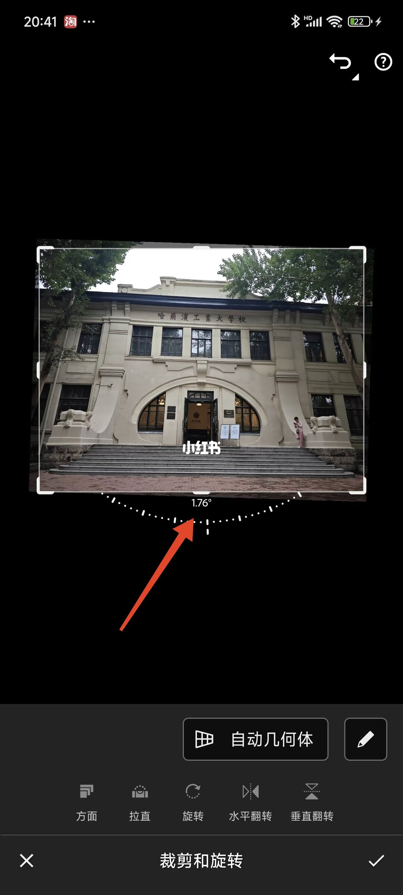
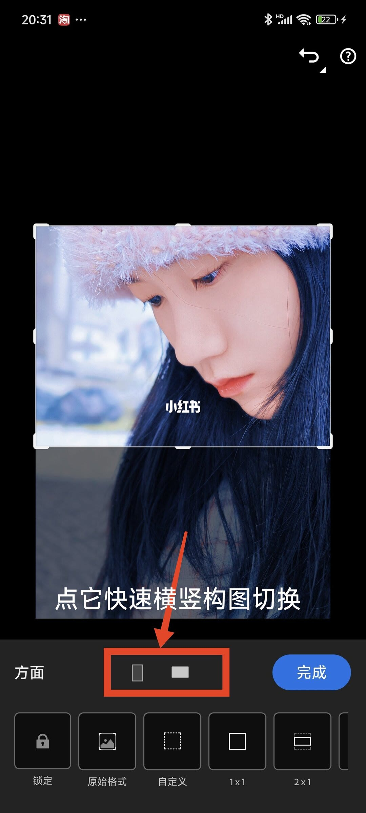
5/14–8/14第5/14页：超实用！Lightroom修图技巧
🌱家人们，今天来继续唠手机Lightroom！ 🌱这软件有免费功能，也有付费的。需要全功能免费安装包的，关注➕群获取哦，开始进入正题 ▶️下面进入正题：🖌️裁剪工具及神奇操作 [一R]自由旋转：点开“裁剪”，能看到图片下面有一排带数字的圆弧，这数字会实时显示照片旋转的度数。手指轻轻拖动圆弧，照片就跟着转起来啦，超简单（图2） [二R]裁剪与比例选择：点击方面，“锁定”“原始格式”“自定义”和各种比例选项一目了然。想裁成1:1正方形，点1:1后拖动边框调整范围，再点“完成”就行。要是没找到合适尺寸，点“自定义”随意拖边框裁剪。选比例时“锁定”自动生效，选“自定义”则自动解锁。想恢复原片比例，点“原始比例”就OK。“完成”左边的横竖小方框，点击一下就能快速切换横竖构图，便捷到哭！悄悄说，“豆英”视频封面常用16:9，图文的话3:4比例很吃香，展示细节超绝，风景、穿搭主题适配度拉满！（图3） [三R]拉直：拍歪了别怕，点一下拉直工具，软件瞬间就能把照片扶正，就算地面歪了近45°也能轻松搞定，超智能！🤪（图4、图5） [四R]旋转：简单粗暴，点一下就能向左或向右旋转90
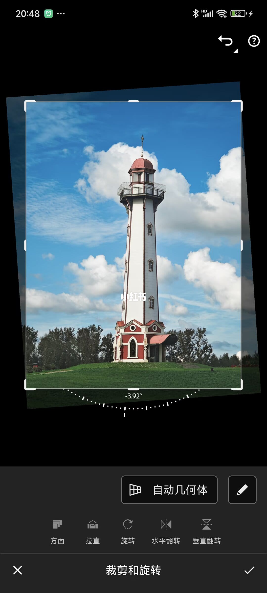
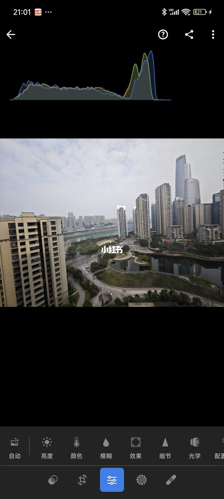
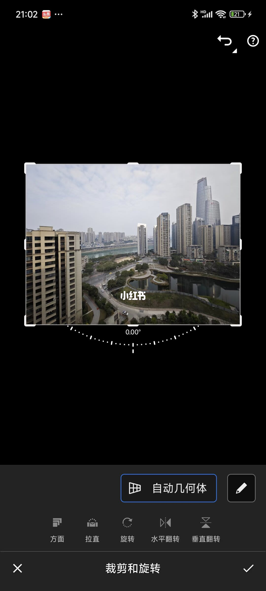
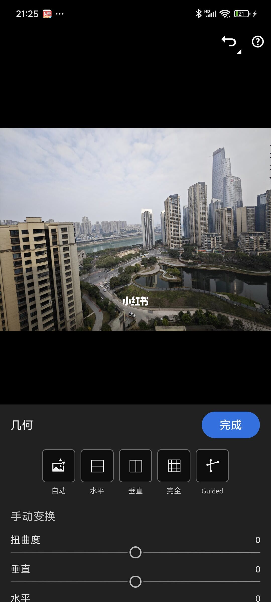
9/14–12/14第9/14页：超实用！Lightroom修图技巧
🌱家人们，今天来继续唠手机Lightroom！ 🌱这软件有免费功能，也有付费的。需要全功能免费安装包的，关注➕群获取哦，开始进入正题 ▶️下面进入正题：🖌️裁剪工具及神奇操作 [一R]自由旋转：点开“裁剪”，能看到图片下面有一排带数字的圆弧，这数字会实时显示照片旋转的度数。手指轻轻拖动圆弧，照片就跟着转起来啦，超简单（图2） [二R]裁剪与比例选择：点击方面，“锁定”“原始格式”“自定义”和各种比例选项一目了然。想裁成1:1正方形，点1:1后拖动边框调整范围，再点“完成”就行。要是没找到合适尺寸，点“自定义”随意拖边框裁剪。选比例时“锁定”自动生效，选“自定义”则自动解锁。想恢复原片比例，点“原始比例”就OK。“完成”左边的横竖小方框，点击一下就能快速切换横竖构图，便捷到哭！悄悄说，“豆英”视频封面常用16:9，图文的话3:4比例很吃香，展示细节超绝，风景、穿搭主题适配度拉满！（图3） [三R]拉直：拍歪了别怕，点一下拉直工具，软件瞬间就能把照片扶正，就算地面歪了近45°也能轻松搞定，超智能！🤪（图4、图5） [四R]旋转：简单粗暴，点一下就能向左或向右旋转90
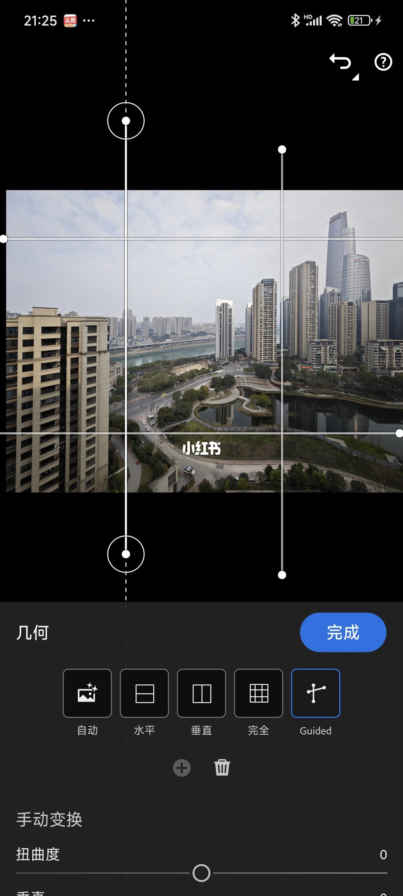
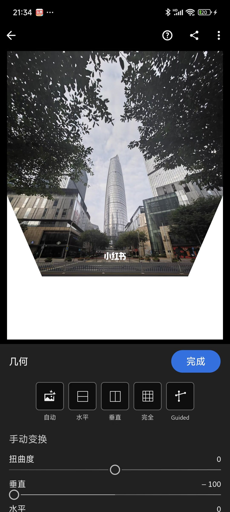
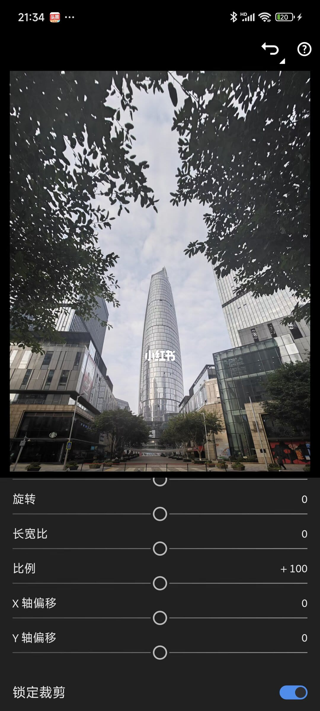
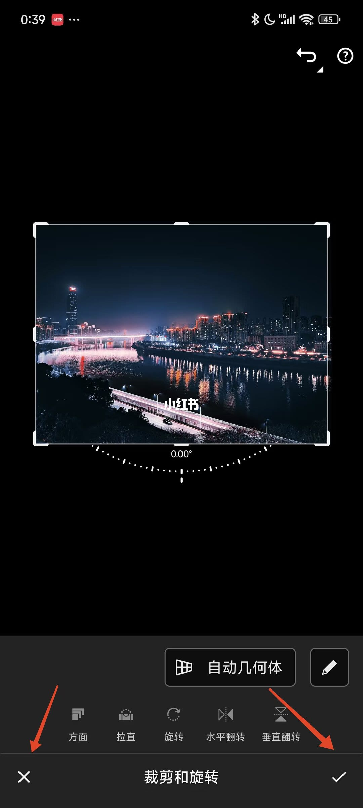
13/14–14/14第13/14页：超实用！Lightroom修图技
🌱家人们，今天来继续唠手机Lightroom！ 🌱这软件有免费功能，也有付费的。需要全功能免费安装包的，关注➕群获取哦，开始进入正题 ▶️下面进入正题：🖌️裁剪工具及神奇操作 [一R]自由旋转：点开“裁剪”，能看到图片下面有一排带数字的圆弧，这数字会实时显示照片旋转的度数。手指轻轻拖动圆弧，照片就跟着转起来啦，超简单（图2） [二R]裁剪与比例选择：点击方面，“锁定”“原始格式”“自定义”和各种比例选项一目了然。想裁成1:1正方形，点1:1后拖动边框调整范围，再点“完成”就行。要是没找到合适尺寸，点“自定义”随意拖边框裁剪。选比例时“锁定”自动生效，选“自定义”则自动解锁。想恢复原片比例，点“原始比例”就OK。“完成”左边的横竖小方框，点击一下就能快速切换横竖构图，便捷到哭！悄悄说，“豆英”视频封面常用16:9，图文的话3:4比例很吃香，展示细节超绝，风景、穿搭主题适配度拉满！（图3） [三R]拉直：拍歪了别怕，点一下拉直工具，软件瞬间就能把照片扶正，就算地面歪了近45°也能轻松搞定，超智能！🤪（图4、图5） [四R]旋转：简单粗暴，点一下就能向左或向右旋转90
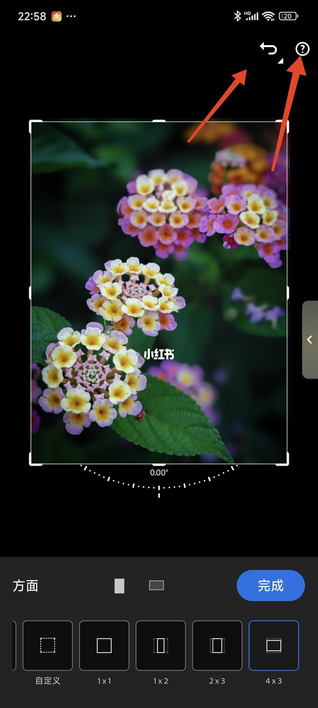
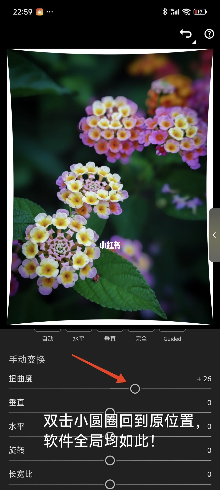
口述/画面要点（14段）
结合 Whisper medium 与画面大字整理；专有名词已校对。
封面/要点：🌱家人们，今天来继续唠手机Lightroom！ 🌱这软件有免费功能，也有付费
第2/14页：超实用！Lightroom修图技巧大课堂（裁剪）
第3/14页：超实用！Lightroom修图技巧大课堂（裁剪）
第4/14页：超实用！Lightroom修图技巧大课堂（裁剪）
第5/14页：超实用！Lightroom修图技巧大课堂（裁剪）
第6/14页：超实用！Lightroom修图技巧大课堂（裁剪）
第7/14页：超实用！Lightroom修图技巧大课堂（裁剪）
第8/14页：超实用！Lightroom修图技巧大课堂（裁剪）
第9/14页：超实用！Lightroom修图技巧大课堂（裁剪）
第10/14页：超实用！Lightroom修图技巧大课堂（裁剪）
第11/14页：超实用！Lightroom修图技巧大课堂（裁剪）
第12/14页：超实用！Lightroom修图技巧大课堂（裁剪）
第13/14页：超实用！Lightroom修图技巧大课堂（裁剪）
第14/14页：超实用！Lightroom修图技巧大课堂（裁剪）